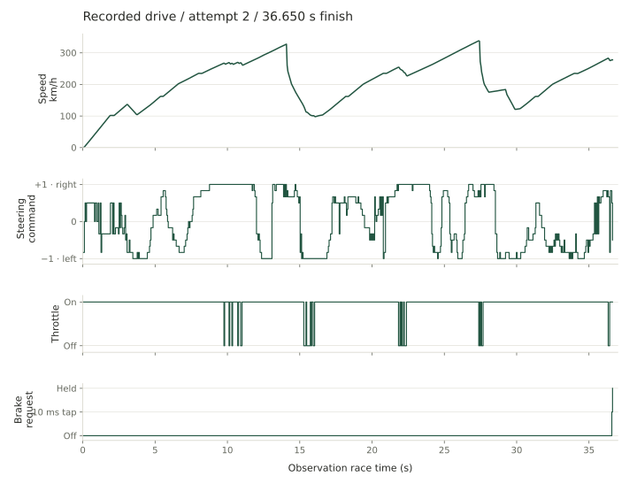
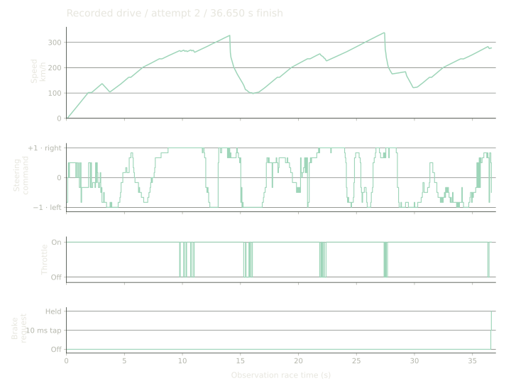

The 50 ms control loop
Trackmania keeps running while the policy computes its next action. My controller requests a decision every 50 ms. In the thirty-attempt confirmation, mean model latency was 8.546 ms and the longest observed step on the game clock was 80 ms. Inference time and the interval between observations measure different parts of that loop. Neither alone tells me whether the car will make the next corner.
The recorded driver reads telemetry and road geometry prepared in advance. It can receive a bend’s shape before the bend appears on camera. Openplanet supplies the game state. The feature pipeline combines it with the map, and the controller applies the selected steering and pedal command. The images in the film show the drive, but are not this model’s input.
I trained and tuned on this route, then froze the controller for evaluation. The target was thirty finishes with a mean below 37 seconds. Most of the work below came from cases where a better loss, higher reward or faster best lap failed to improve that result.
The TMRL fork, 2023-2024
I started tinkering with TMRL in the summer of 2023. The first surviving commit, from July 24, updates the fork to a newer version of the framework. I was trying different inputs and networks and learning how to make the game, telemetry and training code work together.
TMRL provided the starting point: a way to run reinforcement learning against a real-time game. The agent observes the car and road, chooses steering and pedal inputs, then learns from what happens next. The awkward part is that the game keeps moving while the rest of the system does its work.
A lot of the early work was fixing things that had to work before any algorithm could learn. One replay-buffer bug was saving six values where forty were expected. I changed how the game sent telemetry and how the networks handled it. I tried Truncated Quantile Critics (TQC), then added a model that used telemetry without images. The reason in the October commit was simple: make training faster.
This was the beginning of a question that kept returning: how much of the driving problem should the network infer from an image and how much should I describe explicitly? Telemetry and track geometry are useful shortcuts. They expose speed, orientation and the road ahead in a form that a relatively small model can process. They also make the setup dependent on having those inputs for the map.
By the end of 2023 I was also trying longer learning targets and networks that remembered earlier observations. That led through recurrent models based on LSTM and GRU, two ways of carrying information between decisions. Some ideas stayed and others were dropped. The original TMRL authors built the foundation. From that starting point, I continued the experiments and debugging that eventually became TrackmaniaRL.
- TMRL experimentsTelemetry, TQC, training without images and networks with memory.
- Training and configurationIQN tuning, experiment configuration, reward and replay work.
- A reusable runtimeRepeatable evaluation, learning from demonstrations and separate driving and training processes. First TrackmaniaRL release.
- Consistency and new inputsGraph-based driving, recovery experiments, the sub-37 confirmation and camera-based work.
IQN and 78 discrete controls
I had tried TQC and actor-critic models earlier in the project. Implicit Quantile Networks (IQN) stayed because they worked with the fixed control table and later let me restrict action choice without retraining the network. The inputs, reward and runtime changed between those experiments, so I do not have a controlled SAC-versus-IQN result.
The table contains 13 steering levels × 2 throttle settings × 3 brake modes = 78 actions. Steering runs from −1 to +1. Throttle is on or off. Braking is off, held or a 10 ms tap. One action specifies all three controls. IQN scores the complete combinations, rather than selecting steering and pedals independently.
The IQN head estimates quantiles of future return. At evaluation I average its predictions to rank actions. In the final controller, a map-specific filter first excludes unsupported actions on the difficult part of the route, and IQN chooses among those left. The distributional head does not make that choice automatically risk-averse.



In this lap, 731 of the 733 decisions requested no brake. The other two requested one tap and one held-brake action. Throttle cuts and steering changes account for most of the visible control activity. This is the 36.650-second neural-flow film lap, not the 36.560-second best lap from the thirty-attempt confirmation.
Rebuilding the training runtime
In February 2026, I updated the fork and tried new actor-critic models. By spring, running the experiments had become a problem of its own. Changing an algorithm or an input should not have meant maintaining another training program. I began separating those choices so I could spend more time testing ideas and less time reconnecting the same pieces.
The experiment logs fill in what the commits leave out. In May and June I tried faster exploration decay, larger batches, lower learning rates, longer learning targets, gradient clipping and different target-network update schedules. The logs include hundreds of training attempts, evaluations and restarts.
By May, the main ingredients of the current model were already there: a graph describing the road, IQN for choosing actions and a SimbaV2-style network to process the combined information. I kept changing how far the car could see ahead and how it explored. I also tried convolutional branches for processing ordered road samples and helping with recovery. The model took shape gradually, months before the package release.
I learned to be careful with the dashboards. A run marked “crashed” might simply have been interrupted, while a summary could show only its last episode. Some early reports even missed successful finishes because the charts had sampled away those points. I had to go back to the full histories to understand what the car had actually done.
I tried changes intended to make the value estimates behave better, including Munchausen reward terms and penalties for quantile predictions getting out of order. With loose settings, the predicted rewards could grow too large. Stronger penalties made the estimates look tidier without necessarily making the car drive farther. Watching actual laps often told me more than the training loss.
For the timeline here, I used the experiment dates alongside the commits. Some reports were saved weeks after the runs they describe.
Training improved, but evaluation collapsed
In the July experiment notes, the training finish rate improved from 32% to 82% and then 84%. Frozen evaluation moved in the opposite direction: nine finishes in ten attempts, then eight, then one.
The training driver could load a new version of the network roughly every five seconds. One lap could therefore mix decisions from several versions, while evaluation used a single frozen network. On top of that, the driving experience sometimes waited almost two minutes in a queue before the learner used it. The two finish rates were measuring different situations.
I changed the system to keep one network version for a whole lap, clear the backlog and retain more driving history. I also saved the model that performed best in evaluation. I suspected that losing useful examples of early failures was hurting training too, although the logs gave clearer evidence for the changing networks and delayed experience.
414 episodes with the brake on
An exploration bug left the car braking for the first 414 episodes. Exploration was nominally at its maximum, but 85% of random actions kept the pedal mode preferred by the untrained network. In that run it preferred the brake. Calling this evidence against IQN or the encoder would have missed the point: the exploration code was not doing what the configuration suggested.
Another bottleneck was simply getting saved experience ready for training. Looking twenty decisions ahead meant assembling thousands of small Python objects for a batch. Storing the data in columns instead reduced the measured sampling time from about 106 to 22 milliseconds. That did not teach the car a better racing line, but it let the learner keep up.
slot = current_id % store.capacity
self.final_id = current_id
self.reward += self.discount * float(store._rewards[slot])
self.steps += 1
self.terminated = bool(store._terminated[slot])
self.truncated = bool(store._truncated[slot])These problems changed what I wanted from the project. Swapping neural networks was useful, but I also needed to know that observations, actions, episode boundaries and updates meant the same thing throughout the system.
When the slower lap earned more reward
Reference-point progress
TMRL uses a recorded trajectory as a guide. It finds the nearby reference point that best matches the car’s position and rewards forward movement through that list:
Here, j is the index of the matched reference point, and t labels consecutive decisions. Its game interface adds a configurable finish bonus and a constant penalty at each step. If the car stops making progress for too long, the episode ends. That is a useful way to teach a car to reach the finish without manually prescribing its steering.
It also gives the agent reasons to drive faster: fewer step penalties and earlier rewards under discounting. But the progress term measures reference indices, so its scale depends on how the trajectory was sampled. The finish bonus does not distinguish two successful lap times. For my goal, getting the average below 37 seconds, I needed to check whether the complete reward actually preferred the faster driving I wanted. The original progress calculation remains a good starting point, rather than a lap-time objective I could copy unchanged.
Progress, velocity and the time cost
The early IQN recipe combined progress with velocity projected along the road, a small time cost of 0.02 reward units per second and a finish bonus of 10. It produced a recorded 36.30-second training lap. That showed that the car could find a fast line, but a best lap was not enough to establish consistent sub-37 driving.
I also tried making completion the main priority: 40 reward units for a full lap’s progress, a finish bonus of 60 and a small time cost of 0.1 per second, with no extra penalty for failure. Follow-up evaluations still had medians around 80-99 seconds and often failed to finish. Other parts of those experiments changed too, but the reward had a clear weakness. Moving slowly could keep earning progress, while a fast failed lap could still end with a substantial positive return.
Projected velocity was another trap. It rewards motion along the road instead of raw speed in any direction, which is useful. Yet velocity integrated over time is close to distance travelled. A longer, slower path can accumulate more of it. Increasing the time cost to 1 unit per second and using a finish bonus of 70 improved the objective, but did not fully remove that problem.
One pair of training laps made it obvious: 37.18 seconds earned 346.21 reward units, while 39.39 seconds earned 347.23. Both had 17 contact flags. The slower lap collected 119.16 units of projected-velocity reward instead of 115.93, enough to outweigh its extra time. A higher return still did not always mean a faster finish.
Re-scoring 200 completed laps
Before starting another training run, I re-scored the same 200 completed laps with several alternatives. This was an offline check of the objective, not a test of how a newly trained car would drive.
| Reward variant | Faster laps ranked higher | Decision |
|---|---|---|
| Existing reward | 64.4% | Too many faster laps ranked below slower ones. |
| Double the contact penalty | 66.8% | Little improvement. Contact flags measure flagged control steps, so they are not a count of separate crashes. |
| Remove projected velocity | 87.5% | A better time ranking, but it cut roughly 116 reward units from a completed lap, changing the scale of the scores the network had already learned. |
| Keep the dense reward and add a signed finish-time term | 84.4% | A better time ranking while keeping most of the reward the model was already trained on. I took this version into further training. |
The added term was . It gave the two example laps adjustments of -4.36 and -8.78, restoring their order. Unlike a bonus paid only below a threshold, it still gives the agent credit for improving from 39 to 38 seconds. The 35-second reference sets the offset. It is not the benchmark’s 37-second acceptance threshold.
I then fine-tuned the existing model with that term and fresh replay. Its recorded evaluations included a five-lap mean of 36.962 seconds. Since initialization and replay also changed, this supports keeping the revised training setup rather than proving an isolated effect of the reward. The later 30-attempt confirmation used the same reward with the context, recovery and action-support changes described below.
The reward I used
For an ordinary decision, the active terms are:
Here, is the newly covered fraction of the reference path. is forward velocity and is negative when moving backwards. is elapsed game time. The contact indicator is 1 on a flagged contact step and 0 otherwise. At the usual decision rate, time alone costs 0.05 reward units per step. A valid finish pays any remaining progress reward, then adds the finish bonus calculated from the lap time . Each flagged contact step costs another 0.15.


A finish adds the base bonus and the time correction, whose negative part is capped at the size of that bonus. A natural failure, such as going too far off the reference path, getting stuck or exceeding the time limit, adds -2 instead. The learner discounts future rewards with . I still select checkpoints by actual finish counts and lap times, because discounted reward is a training signal rather than the benchmark itself.
The library has other reward options, including rewarding pace against a demonstration, giving an extra bonus below a target time and penalizing steering changes. They were turned off in this controller. I kept the signed finish-time correction because it fixed a ranking problem I had measured and the fine-tuned model gave useful evaluation results.
The thirty-attempt confirmation
By September the car could already produce quick laps on the test track. My goal was an average below 37 seconds across a fresh set of 30 attempts. An occasional wall contact, long slowdown or failed recovery could still ruin that average.
The finish-time reward gave me a better starting point. At roughly 297,000 additional transitions, one five-lap evaluation averaged 36.962 seconds. Across the fine-tuning run’s ten evaluation batches, 47 of 50 attempts finished. The car was close, but the occasional slow lap still mattered.


Road context and recovery
One useful change was giving the trained model more information about its position on the road: how close it was to an edge, whether it was sliding and how soon a bend would arrive at its current speed. Both versions finished all 30 comparison attempts. The mean improved from 38.54 to 37.84 seconds, largely because the slow laps became less costly. The 95th-percentile time, a measure near the slow end of the group, fell from 46.83 to 42.09 seconds.
Other changes made the tradeoff worse. I tried keeping an action unless another had a sufficiently higher score, but that delayed steering corrections. Letting the learning target look twenty decisions ahead instead of five produced a 36.28-second best lap, yet the same ten-lap batch averaged 42.04 seconds. A fast highlight could hide a poor model.
Giving recovery its own recurrent network caused another problem: it could change a good racing line even when nothing had gone wrong. In one development run, evaluation fell from ten finishes in ten attempts to five. Restricting the correction to incidents was more promising, but that version still finished only 29 of 30 attempts, with a mean of 38.78 seconds among finishes. It needed another change to reach the goal.
Collecting the comparison also exposed a setup problem: the game initially remained on its replay screen. I kept those timeouts in the report and collected the valid comparison after fixing the setup.
A fixed filter over reference actions
The change that finally passed did not require training another network. I kept the model and added a filter based on completed drives already saved in its replay. On the difficult part of the track, the controller looked for similar situations and narrowed its choices to actions used in those situations. IQN still chose the highest-scoring action from that set.
The filter matched the car’s motion and position on the road. If the car was too slow or too far from the saved examples, it used the ordinary policy instead. I fixed those examples before the benchmark and did not add the benchmark laps to them.
| Driving setup | Mean lap time | Finished |
|---|---|---|
| Road geometry + car motion | 38.544 s | 30/30 |
| Added road-position and slip context | 37.842 s | 30/30 |
| Later recovery model, ordinary action choice | 38.061 s | 10/10 |
| Same recovery model + reference-action filter | 36.977 s | 30/30 |
In the first comparison, the model with extra context had less costly slow laps. The later filter narrowed the controls available to a frozen model. Every attempt in these four batches finished, so the means include the complete batches. The full development curves above show the runs between these checkpoints.
30/30 finishes. Mean 36.977 s. Slowest attempt 41.370 s.


The controller reached the target, though the narrow margin and slowest lap leave room for improvement. This was my strongest confirmed setup on this development track. Further batches are needed to establish how reliably it can repeat that mean. The track had been used throughout development. These laps test repeated driving on a familiar route, not performance on an unseen map.
How it compares with my own driving
For a personal reference, this sub-37-second pace is close to my own driving level on the same map. I can occasionally get below 36 seconds, roughly once in several dozen attempts. That is my experience rather than a separately logged human benchmark. The controller stands out for its consistency: it finished all 30 confirmation attempts, with 25 laps below 37 seconds and a 36.977-second mean. Watching it repeat that pace feels almost “inhuman” to me, even though my occasional best lap is still faster.
The times come from the game’s telemetry clock. The series recorded 458 skipped telemetry frames, including 232 during the slowest attempt. That coincidence does not establish why the lap was slow. Every attempt remains in the result. The data notes include the full times and frame counts.
The recorded controller
The model in the neural-flow film below has about 1.64 million parameters. It reads the road and the car’s motion, combines them in a SimbaV2-style network and uses IQN to choose controls. Small extra branches help it interpret the situation and react to trouble. It does not use a GRU, the recurrent layer I had tried to give it memory between decisions. The recovery experiments with that layer became less consistent.
What the model knows about the drive
Every decision starts with four groups of information. Together, they describe the road ahead, the car’s movement, its position on the track and recent signs of trouble.
The shape of the road
I sample the left edge, center line and right edge every 2.5 metres, from 2.5 to 110 metres ahead of the car. That gives 44 cross-sections of the road. Each point is described relative to the car, so the model sees where the road goes from the driver’s position rather than coordinates on a global map.
How the car is moving
The car inputs describe how fast it is moving, how much of that movement is forward or sideways, how far it has progressed along the route, how sharply it is turning and whether it is accelerating. The model also knows its heading relative to the road, its gear and whether its nose is pointing up or down. It receives the current throttle, brake and steering inputs plus slip readings from the front wheels. The remaining values describe the road’s curvature at the same 44 sample points and the number of skidding wheels. Together, these are the 60 values in the car branch.
Its position and the next few seconds
The 29 context values describe position across the road, clearance to each edge, road width and the distance to the nearer edge. They add sideways slip, rear-wheel slip, engine RPM, grip and time spent airborne. An encoding of progress tells the network where it is along the route. Finally, it gets estimates of upcoming curvature and how demanding those bends would be at its current speed, at six horizons ranging from a quarter of a second to six seconds. A corner 50 metres away arrives much sooner when the car is fast, so this preview adds something the fixed-distance samples do not express directly.
Whether something has just gone wrong
The eight recovery values track the interval between decisions, losses in total and forward speed, progress since the last decision, reduced edge clearance and movement away from the road’s center. They also remember how much speed the car has lost relative to a recent peak and retain a short memory of incident signals. This gives the model a limited way to recognize trouble after the first sudden change has passed.
What SimbaV2 contributes
SimbaV2 is a way to build the network, not a competing action-selection algorithm. Its key idea here is to keep feature vectors and weight vectors at a controlled length. A residual block learns how much of a transformed representation to mix with its input, then normalizes the result again. The extra constant input preserves magnitude information that would otherwise be lost when a vector is normalized.

I adapted the paper’s network-building ideas to my road encoder and IQN head, including returning the weights to unit length after each update. The full SimbaV2 method also includes other training choices and was studied with SAC. The paper figure explains the inspiration. The diagram below follows the racing model I actually used.


Turning those inputs into a decision
The road encoder is a graph neural network. Neighboring road samples exchange information twice, allowing a point to be interpreted in the context of the bend around it. The network then combines those samples into one representation of the road. A separate branch processes the car’s motion, with a small, bounded correction from the context inputs.
These two representations are joined and passed through four SimbaV2-style residual blocks. A recovery branch can add another small correction, but only when the incident signal and speed loss both activate it. The aim is to help after trouble without disturbing the normal racing line on every decision.
The checkpoint also contains a Conv1D branch, which processes the road samples as an ordered sequence. In the recorded lap its final correction was zero in all 733 decisions. I therefore cannot point to that extra branch as the reason the car drove well.
At the end, the dueling IQN head scores the controls. “Dueling” means it learns a value for the situation and a relative advantage for each action. It combines predictions at 32 quantile levels to estimate an average return for each choice. The 78 actions come from 13 steering levels and six pedal modes, including short brake taps. The controller makes its choice every 50 milliseconds.
The reference-action filter runs after the network. On the supported section of this track, it uses 15 similar saved situations to narrow the choices. Outside that support, it falls back to the ordinary policy. It is specific to the map and is one part of the controller that passed the thirty-lap test.
I kept this combination because it passed the test I cared about: thirty finishes with a mean below 37 seconds. The geometry features, bounded corrections and action filter worked together well enough to reach the target on this track.
The reusable parts
Across these experiments, I kept changing observations, models, rewards, replay and evaluation. The recurring work was connecting them correctly. TrackmaniaRL grew out of separating those responsibilities so a new experiment would not require another version of the whole training loop.
The current code is an extensive rewrite of the original TMRL fork. It has its own public API and does not use TMRL as a runtime package. The upstream attribution is preserved in the repository.
I can now choose the game interface, inputs, model and learning algorithm in one experiment configuration. The driving process can collect experience while a separate learner trains, even on another machine. Saved experience and checkpoints let me stop and recover the work. Algorithms such as PPO, which learn from fresh batches of driving, have their own training loop.
Those features came from problems I had already hit. A whole lap should use one network version. A sequence of observations should belong to the same drive. Resuming should catch an incompatible model or configuration. Evaluation should keep the slow and failed attempts alongside the quick ones.
The first TrackmaniaRL release arrived in August 2026. September brought a revised experiment configuration system, more work on camera inputs and demonstrations and many less visible fixes. The library supports several algorithms so I can compare ideas without rebuilding the training system each time. A better experiment may well overturn the choice I use today.
What you can reuse
A configuration connects the environment, feature pipeline, model, replay sampler and learner. For example, I can replace the road encoder while keeping the same learning and evaluation workflow. Compatible value models separate the encoder, temporal core and prediction head, so changing how observations are represented does not require rewriting the whole agent.
The controller in this article is more specialized than the starter configuration: it also needs the matching map geometry, trained weights and saved reference states for its action filter. Installing the package gives you the training tools, not a ready-made sub-37 driver.
To try the library, start with the Python quickstart. Its game-free example demonstrates collection, replay and checkpoints without a game or GPU. It does not train a racing network. The Trackmania setup guide then covers connecting the game and preparing your own map.
Vision architectures and future experiments
The geometry-based network with the reference-action filter is still my best confirmed setup. Its main limitation is where I can use it. In my experience, only a minority of maps have complete track edges that I can record by driving. When those boundaries are missing or incomplete, the road input this model relies on is not available. Camera inputs offer a way to explore driving without that prepared geometry.
There is room to experiment with both visual architectures and learning algorithms. I want to compare encoders that process a short stack of frames with models that maintain memory over time, and test which representations capture the road, motion and recovery cues needed for driving. Contrastive RL is another direction worth exploring, particularly if driving is framed around reaching future states or goals. That would require deciding how to represent those goals and how reaching them relates to fast lap times.
I am also interested in Distributional Reinforcement Learning with Diffusion Bridge Critics, which models the inverse CDF of the return distribution. Its connection to quantile-based value estimation makes it worth investigating alongside IQN, including whether ideas from the two approaches can be combined. This is an experiment to design and test, with attention to training stability and inference cost within the driving loop.
These are open research directions. TrackmaniaRL gives me a way to change the visual encoder, memory and value-learning components while keeping the collection, replay and evaluation machinery in place.
Sources and further reading
The experiment account comes from my Git history, training logs and benchmark notes. The scientific papers are linked where their methods are discussed. Data notes and full figure credits explain how the charts and recordings were selected.
- TrackmaniaRL source and documentation.
- Complete 30-attempt benchmark and experiment ledger.
- Neural-flow recording and model audit.
- Haarnoja et al., Soft Actor-Critic, ICML 2018.
- Schulman et al., Proximal Policy Optimization Algorithms, 2017.
- TMRL - the original Trackmania reinforcement learning framework.
- Dabney et al., Implicit Quantile Networks for Distributional Reinforcement Learning (IQN), ICML 2018.
- Kuznetsov et al., Controlling Overestimation Bias with Truncated Mixture of Continuous Distributional Quantile Critics (TQC), ICML 2020.